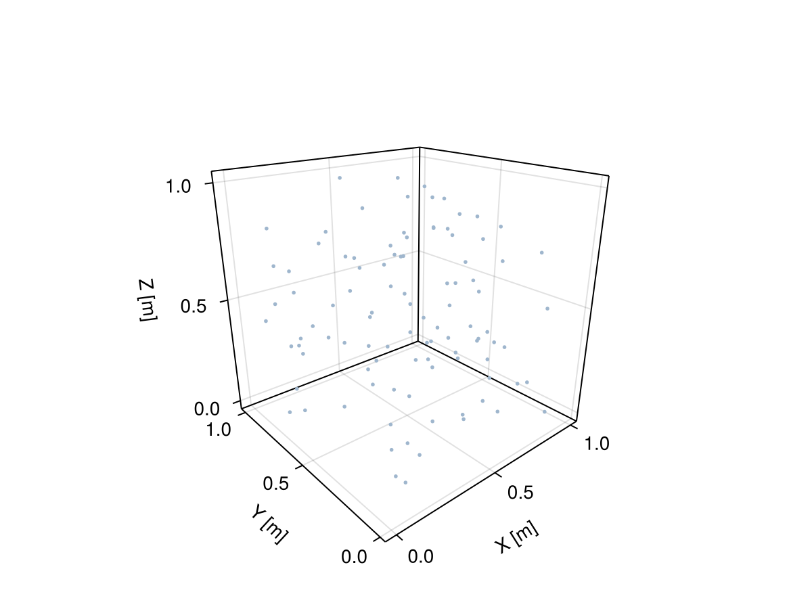
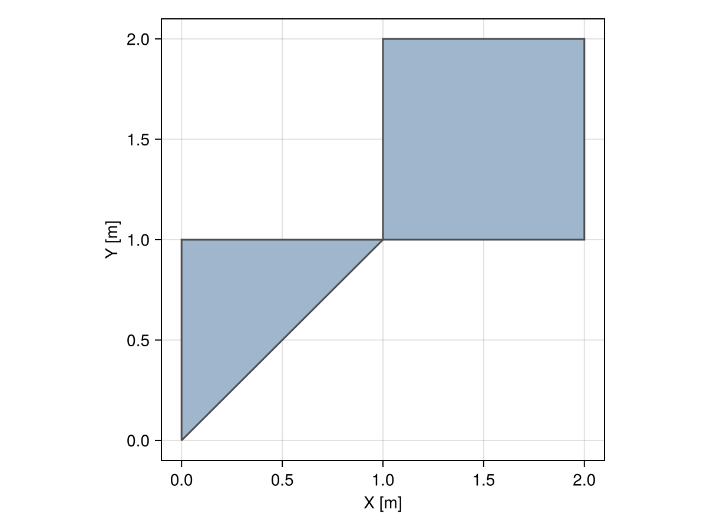

Domains
Overview
A geospatial domain is a (discretized) region in physical space. For example, a collection of rain gauge stations can be represented as a PointSet in the map. Similarly, a collection of states in a given country can be represented as a GeometrySet of polygons.
We provide flexible domain types for advanced geospatial workflows via the Meshes.jl submodule. The domains can consist of sets (or "soups") of geometries as it is most common in GIS or be actual meshes with topological information.
Meshes.Domain — Type
Domain{M,CRS}A domain is an indexable collection of geometries (e.g. mesh) in a given manifold M with point coordinates specified in a coordinate reference system CRS.
Meshes.Mesh — Type
Mesh{M,CRS,TP}A mesh of geometries in a given manifold M with point coordinates specified in a coordinate reference system CRS. Unlike a general domain, a mesh has a well-defined topology TP.
The list of supported domains is continuously growing. The following code can be used to print an updated list in any project environment:
# packages to print type tree
using InteractiveUtils
using AbstractTrees
# load framework's domains
using GeoStats
# define the tree of types
AbstractTrees.children(T::Type) = subtypes(T)
# print all currently available transforms
AbstractTrees.print_tree(Domain)Domain
├─ CylindricalTrajectory
├─ GeometrySet
├─ Mesh
│ ├─ RectilinearGrid
│ ├─ RegularGrid
│ ├─ SimpleMesh
│ ├─ StructuredGrid
│ └─ TransformedMesh
├─ SubDomain
└─ TransformedDomainExamples
PointSet
Meshes.PointSet — Type
PointSet(points)A set of points (a.k.a. point cloud) representing a Domain.
Examples
All point sets below are the same and contain two points in R³:
julia> PointSet([Point(1,2,3), Point(4,5,6)])
julia> PointSet(Point(1,2,3), Point(4,5,6))
julia> PointSet([(1,2,3), (4,5,6)])
julia> PointSet((1,2,3), (4,5,6))pset = PointSet(rand(Point, 100))
viz(pset)
GeometrySet
Meshes.GeometrySet — Type
GeometrySet(geometries)A set of geometries representing a Domain.
Examples
Set containing two balls centered at (0.0, 0.0) and (1.0, 1.0):
julia> GeometrySet([Ball((0.0, 0.0)), Ball((1.0, 1.0))])Notes
Geometries with different CRS will be projected to the CRS of the first geometry.
tria = Triangle((0.0, 0.0), (1.0, 1.0), (0.0, 1.0))
quad = Quadrangle((1.0, 1.0), (2.0, 1.0), (2.0, 2.0), (1.0, 2.0))
gset = GeometrySet([tria, quad])
viz(gset, showsegments = true)
RegularGrid
Meshes.RegularGrid — Type
RegularGrid(min, max; dims=dims)A regular grid from min point to max point with dimensions dims. The number of dimensions must match the number of coordinates of the points.
RegularGrid(min, max, spacing)Alternatively, construct a regular grid from min point to max point by specifying the spacing for each dimension.
RegularGrid(dims)
RegularGrid(dim₁, dim₂, ...)Alternatively, construct a regular grid with dimensions dims = (dim₁, dim₂, ...), min point at (0m, 0m, ...) and spacing equal to (1m, 1m, ...).
RegularGrid(origin, spacing, topology)Finally, construct a regular grid with origin point, spacing and grid topology. This method is available for advanced use cases involving periodic dimensions. See GridTopology for more details.
Examples
Create a 1D grid from -1.0 to 1.0 with 100 segments:
julia> RegularGrid((-1.0,), (1.0,), dims=(100,))Create a 2D grid with quadrangles of size (1.0, 2.0):
julia> RegularGrid((0.0, 0.0), (10.0, 20.0), (1.0, 2.0))Create a 3D grid with 100x100x50 hexahedra:
julia> RegularGrid(100, 100, 50)See also CartesianGrid.
Meshes.CartesianGrid — Type
CartesianGrid(args...; kwargs...)A Cartesian grid is a RegularGrid where all arguments are forced to have Cartesian coordinates. Please check the docstring of RegularGrid for more information on possible args and kwargs.
grid = CartesianGrid(10, 10, 10)
viz(grid, showsegments = true)